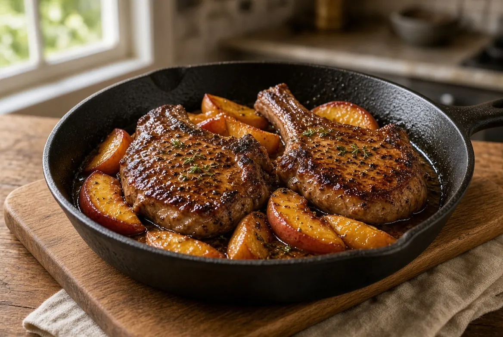

Peach-Bourbon Pork Chops on the Pellet Grill
Thick bone-in chops take a short fruitwood smoke on the pellet grill, then a hard cast-iron sear on the grates and the same peach-bourbon butter glaze as the skillet version. The 11002B tops out around 500 F and has no direct-flame sear, so the skillet is the crust. Stovetop method lives on the original page.

4 servings
By
Yield: 4 servings
Prep:
Cook:
Total:
Ingredients
- 4 bone-in pork chops, 1 to 1 1/4 inches thick (about 2 1/2 pounds)
- 1 1/2 teaspoons kosher salt
- 1 teaspoon black pepper
- 1/2 teaspoon smoked paprika
- 1 tablespoon avocado oil or bacon fat
- 2 ripe peaches, pitted and sliced (or 1 1/2 cups frozen sliced peaches, thawed)
- 2 tablespoons unsalted butter
- 1 small shallot, minced
- 1/3 cup bourbon
- 2 tablespoons peach preserves or honey
- 1 tablespoon apple cider vinegar
- 1 teaspoon Dijon mustard
- 1 pinch red pepper flakes
- 2 sprigs fresh thyme
- Apple, peach, or cherry pellets
Instructions
- Pat chops dry. Season both sides with salt, pepper, and paprika. Rest 10 minutes at room temperature while the grill heats. If you have time, salt them uncovered in the fridge 1 to 4 hours and add pepper and paprika just before they hit the grate.
- Heat a pellet grill to 225 F with apple, peach, or cherry pellets. Super Smoke is fine for the first 10 to 15 minutes if your grill has it; then run a clean 225 F. Set a 12-inch cast-iron skillet on the far side of the grate so it preheats with the pit.
- Set the chops on the grate, not in the skillet. Probe the thickest chop from the side into the center. Smoke until 120 to 125 F internal, about 20 to 35 minutes. You want a light mahogany blush, not bark. Do not chase crust on the grate.
- Move the chops to a plate. Crank the grill to 450 to 500 F (HIGH on the 11002B). Leave the skillet on the grate, lid closed, 8 to 10 minutes until the iron is ripping hot. A drop of water should skitter and vanish.
- Add the oil or bacon fat to the skillet. Lay in the chops. Sear 2 to 3 minutes without moving until a deep crust forms. Flip and sear 2 to 3 minutes more until 140 to 145 F in the center. Work in two batches if the pan is crowded. Transfer to a plate and tent loosely.
- Leave the skillet on the hot grate. Add butter and shallot. Cook about 1 minute. Add peaches and cook 2 minutes until they start to soften and pick up fond.
- Pull the skillet to the front of the grate or lift it off the heat. Add the bourbon. Return to the heat and simmer 1 minute, scraping the fond. Stir in preserves, vinegar, Dijon, red pepper flakes, and thyme. Cook 2 to 3 minutes until the sauce is glossy and coats a spoon.
- Return chops and any juices to the skillet. Spoon glaze over. Close the lid 2 minutes if the sauce needs another bubble. Rest 3 to 5 minutes. Serve chops with peaches and pan sauce. Good with roasted green beans or buttered rice.
- Stovetop method: use the original Peach-Bourbon Cast-Iron Pork Chops page. Same glaze, no smoke step — sear in a 12-inch skillet over medium-high heat, build the sauce in the same pan, and finish at 140 to 145 F.